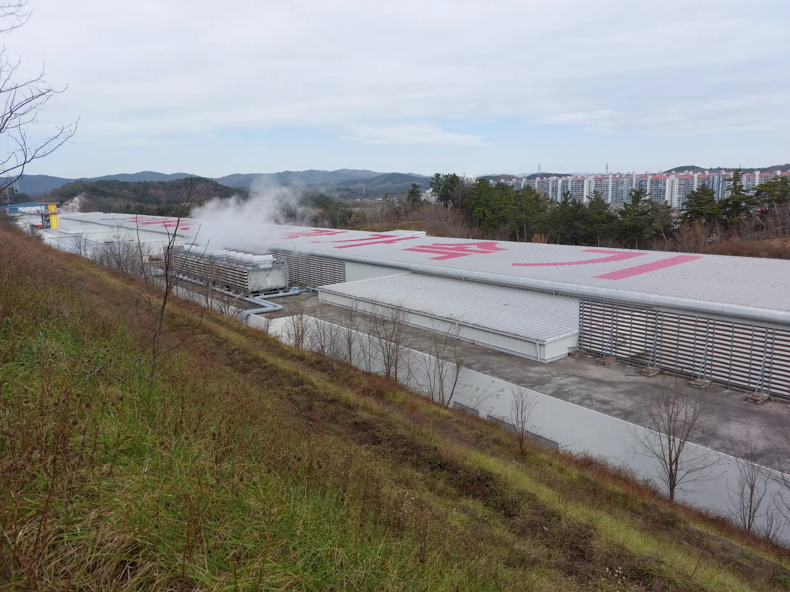

03
News
Latest
The lab is new and so is this page. Notes from the bench, the beamline and the occasional conference will appear here as they happen.

The lab is new and so is this page. Notes from the bench, the beamline and the occasional conference will appear here as they happen.